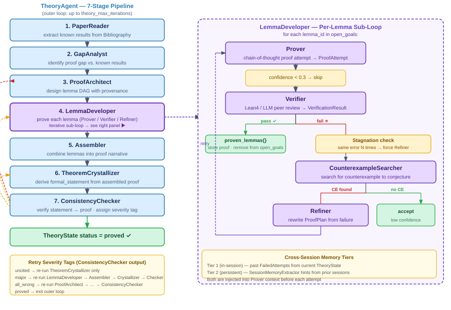
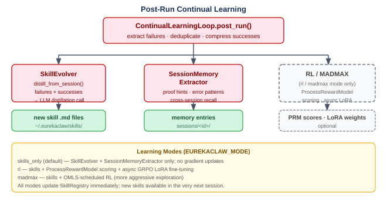

系统结构#
概述#
EurekaClaw 以多智能体流水线形式组织，由 MetaOrchestrator 统一调度。每个智能体专注于研究生命周期的某一阶段，产物通过中央 KnowledgeBus 在智能体之间共享。
流水线阶段#

核心组件#
KnowledgeBus#
所有智能体共享的中央内存产物存储。所有数据通过它流转——智能体在轮次之间不保留私有状态。
KnowledgeBus
├── ResearchBrief — survey findings, selected direction
├── TheoryState — proof state machine (lemma DAG, proofs, goals)
├── Bibliography — all papers found during survey
├── ExperimentResult — numerical validation results
└── TaskPipeline — current task execution plan
产物在每次会话结束时持久化到 ~/.eurekaclaw/runs/<session_id>/。
智能体会话与上下文压缩#
每个智能体在工具调用循环中维护一段对话历史（AgentSession）。为防止上下文无限增长：
历史每隔 N 轮压缩一次（通过
CONTEXT_COMPRESS_AFTER_TURNS配置，默认 6）快速模型将历史压缩为要点摘要
完整对话被替换为该摘要
技能注入#
每次调用智能体之前，SkillInjector 从技能库中检索最相关的前 k 个技能，并以示例形式注入系统提示词。这是跨会话学习的主要机制。
领域插件系统#
领域特定的行为（工具、技能、工作流提示）通过 DomainPlugin 类注入。正确的插件根据领域字符串或猜想关键词自动检测。详见 domains.md。
数据模型#
TheoryState — 证明状态机#
TheoryState
├── informal_statement — plain-English conjecture
├── formal_statement — LaTeX-formalized theorem
├── known_results[] — KnownResult extracted from literature
├── research_gap — GapAnalyst's finding
├── proof_plan[] — ProofPlan (provenance: known/adapted/new)
├── lemma_dag{} — LemmaNode graph (dependencies)
├── proven_lemmas{} — lemma_id → ProofRecord
├── open_goals[] — remaining lemma_ids to prove
├── failed_attempts[] — FailedAttempt history
├── counterexamples[] — Counterexample discoveries
├── assembled_proof — final combined proof text
└── status — pending/in_progress/proved/refuted/abandoned
ResearchBrief — 规划状态#
ResearchBrief
├── domain, query, conjecture
├── directions[] — ResearchDirection (scored 0-1)
│ ├── novelty_score
│ ├── soundness_score
│ ├── transformative_score
│ └── composite_score — weighted average
├── selected_direction — chosen after convergence
└── open_problems[], key_mathematical_objects[]
TheoryAgent 内层循环（7 阶段）#
TheoryAgent 运行一个自底向上的证明流水线，实现于 inner_loop_yaml.py：
阶段 |
类 |
输入 |
输出 |
|---|---|---|---|
1 |
|
Bibliography |
|
2 |
|
known_results + conjecture |
|
3 |
|
research_gap |
|
4 |
|
proof_plan, open_goals |
|
5 |
|
proven_lemmas |
|
6 |
|
assembled_proof |
|
7 |
|
完整 TheoryState |
一致性报告 |
LemmaDeveloper 对每个引理运行独立的内层循环：
{kind=link}

LaTeX 编译流水线#

方向规划回退机制#
IdeationAgent 运行后，MetaOrchestrator._handle_direction_gate() 调用 DivergentConvergentPlanner.diverge() 生成 5 个研究方向。若规划器失败或返回空列表（例如 LLM 解析错误、API 超时），编排器不会静默地以无方向继续执行，而是暂停并提示用户：
打印调研发现的最多 5 个开放问题作为上下文。
请求用户手动输入一个假设/方向。
根据输入构建
ResearchDirection并写入ResearchBrief。若用户未输入任何内容或按下 Ctrl+C，则抛出
RuntimeError，会话干净退出。
该逻辑实现于 meta_orchestrator.py 的 _handle_manual_direction() 中。
理论评审关卡#
TheoryAgent 完成后、WriterAgent 运行前，MetaOrchestrator 执行 theory_review_gate 编排器任务。该关卡独立于 gate_mode，始终触发。
流程：
GateController.theory_review_prompt()打印带编号的引理列表，每个已证明引理标注✓ verified/~ low confidence，并显示所有未解决目标。询问用户：y（继续）或 n（标记最有问题的步骤）。
拒绝时：
用户输入引理编号（
L3）或 ID，以及逻辑缺口的描述。MetaOrchestrator._handle_theory_review_gate()找到理论任务，将反馈以[User feedback]: ...形式注入，将任务重置为PENDING，并重新运行 TheoryAgent 一次。修订后再次展示更新后的草稿（不再进一步重试）。
第二次拒绝时，流水线仍会继续推进到 WriterAgent，并显示警告。
暂停 / 恢复#
TheoryAgent 通过 ProofCheckpoint（agents/theory/checkpoint.py）支持在阶段边界优雅暂停。
暂停流程：
eurekaclaw pause <session_id>或 Ctrl+C 会在~/.eurekaclaw/sessions/<session_id>/pause.flag写入暂停标志。在
inner_loop_yaml._run_once()的每个阶段边界处，检查ProofCheckpoint.is_pause_requested()。检测到暂停时：清除标志，保存
checkpoint.json（当前阶段 + 完整TheoryState），抛出ProofPausedException。ProofPausedException在_run_once和agent.py中均会显式重新抛出，向上传播。
恢复流程：
eurekaclaw resume <session_id>加载checkpoint.json，重建TheoryState，并从保存的阶段重新运行 TheoryAgent。
检查点文件： ~/.eurekaclaw/sessions/<session_id>/checkpoint.json
运行后学习#
{kind=link}
